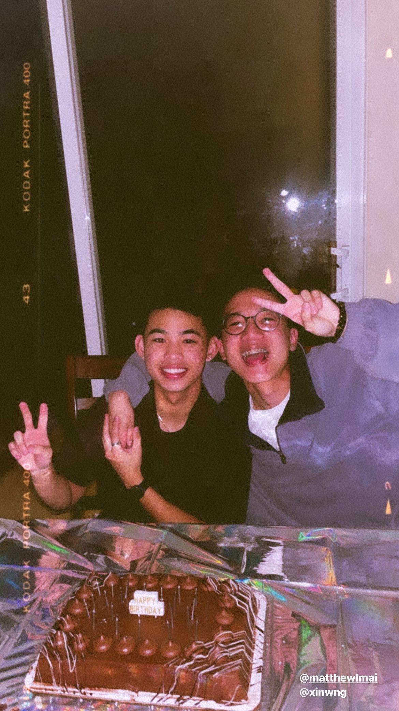
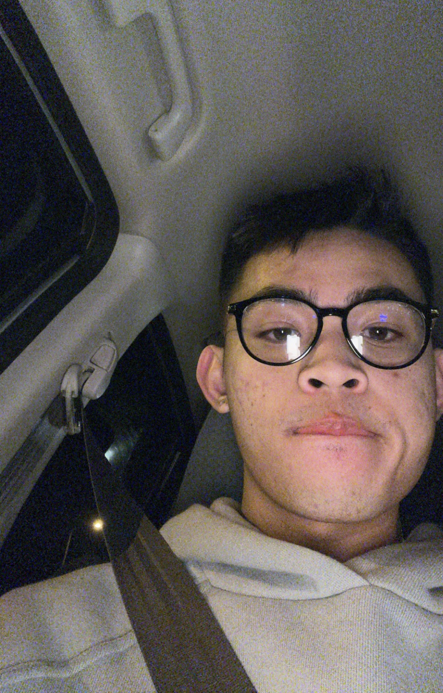
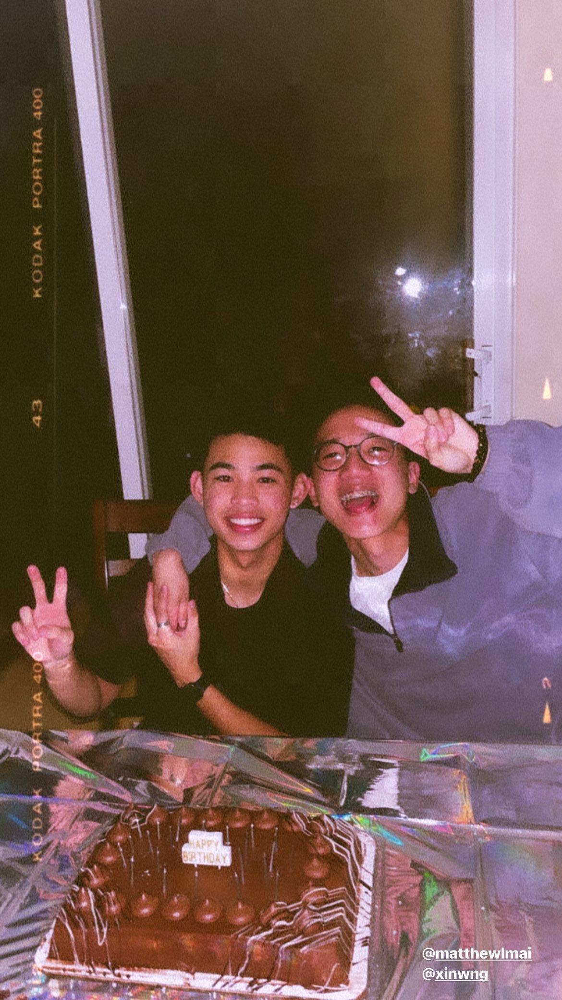
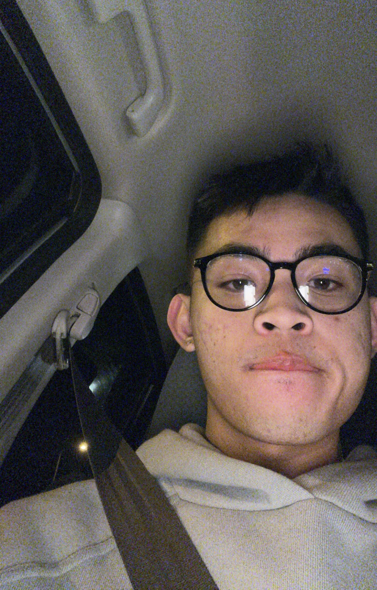
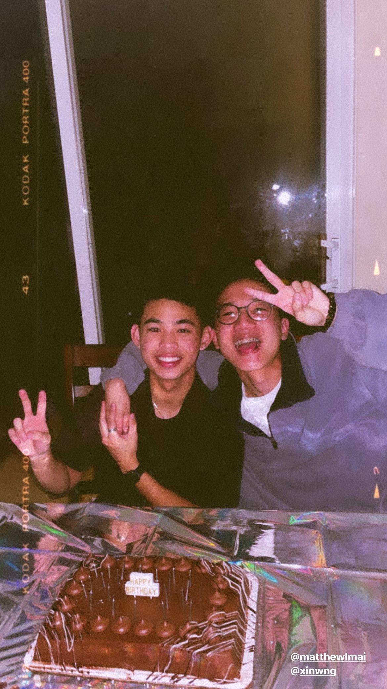
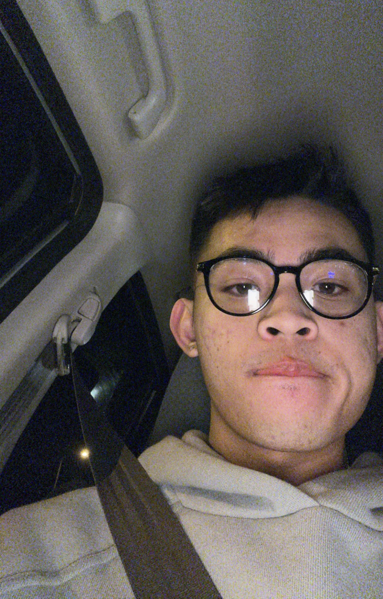

Matthew Mai
Hello there! My name is Matthew Mai! I am currently a fourth year, undergraduate student at the University of California, Riverside pursuing a Bachelor of Science in Biology. Entering UCR as a first-year, I had my aspirations set on medicine early on. I am currently applying for the UCR School of Medicine Early Assurance Program and would love the opportunity to have your letter of recommendation. In this website of my resume, I hope you'll have a clearer image of who I am as a candidate. During my gap-year, I hope to explore the tech field and see how I could better impact and optimize healthcare with the use of technology. Thank you!
I currently serve as an intern for the UCR School of Medicine Office of Faculty Development. Over the past two days, I attended the USC Keck School of Medicine Innovations in Medical Education Conference. I have learned so much about guiding conversations, giving and receiving quality feedback, and how to circumvent microaggression in any professional setting.
Some of my favorite hobbies to do include: hanging out with my friends, hiking, kayaking, fashion, cooking, and binge-watching TV shows on Netflix
Work Experience
Riverside Free Clinic
• Collaboratively worked alongside the Fundraising committee and all Riverside Free Clinic undergraduates to raise money and hold the second annual Summer 2021 Fundraising event
• Outreached to local businesses to inquire about donations, whether it be monetary, gift baskets, or gift cards, for the 18th Annual Riverside Free Clinic Fundraising Banquet
• Ensure the flow of patient intake is running smoothly alongside the Intake committee and warmly welcome patients into the clinic to create a safe environment for the vulnerable, underserved patient demographic the clinic serves
UCR Health Clinical and Administrative Program
• Exposure on how to implement accredited programs on a monthly basis to ensure excellence in medical education of our academic, medical professors
• Author weekly and monthly newsletter articles to release to all faculty of the UCR School of Medicine regarding important updates and accredited workshops geared towards the development of faculty in academic, clinical medicine
• Actively attended an innovative conference that taught about diversity, equity, and guiding crucial conversations
UCR Health CLinical and Administrative Program
• Authored blog articles concerning recent events and discoveries in health made by the University of California, Riverside to publish to residents of the Inland Empire
• Outreached to Inland Empire residents notifying the 65 and older demographic that they are eligible to receive the COVID-19 vaccine at UCR Health clinics
• Created and pipelined educational content to help promote student education
• Created from scratch, well-designed templates for the Marketing and Events department for greater insight and organization of marketing strategies and calendars
Education
University of California, Riverside
University of California Riverside
University of California Riverside
Photo Album
 





